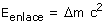

Cuando se unen protones y neutrones para formar un núclido se libera energía (Energía de enlace) La masa del conjunto de protones y de neutrones juntos siempre es menor que la suma de las masas por separado. Esta diferencia se denomina 'defecto de masa'. La energía de enlace procede de la conversión del defecto de masa en energía según la ecuación de Einstein:  |